Section 3.2 The Law of Sines
We have learned to use the trigonometric ratios to solve right triangles. But the trig ratios are only valid for the sides of right triangles. Can we find unknown sides or angles in an oblique triangle?
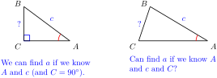
In this section and the next we find relationships among the sides and angles of oblique triangles. These relationships are called the Law of Sines and the Law of Cosines. To derive these new rules, we use what we already know about right triangles.
Consider the oblique triangle below. By drawing in the altitude \(h\) of the triangle, we create two right triangles, \(\triangle BCD\) and \(\triangle ABD\text{,}\) as shown in the figure. Now we can write expressions in terms of \(h\) for \(\sin A\) and for \(\sin C\text{.}\)
Looking at \(\triangle BCD\text{,}\) we see that
\begin{equation*}
\dfrac{h}{a} = \sin (C).
\end{equation*}
Looking at \(\triangle ABD\text{,}\) we see that
\begin{equation*}
\dfrac{h}{c} = \sin (A).
\end{equation*}
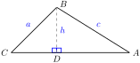
Now we solve each of these equations for \(h\text{:}\)
\begin{align*}
\dfrac{h}{a} \amp = \sin (C) \amp\amp\text{and}\amp \dfrac{h}{c} \amp = \sin (A)\amp \amp\blert{\text{Solve each equation for } h.}\\
h \amp = a \sin (C) \amp\amp\text{and}\amp h\amp = c \sin (A) \amp\amp \blert{\text{Equate the expressions for } h.}
\end{align*}
\begin{align*}
\amp\amp a \sin (C) \amp = c \sin (A) \amp\amp \qquad\quad\amp \amp \blert{\text{Divide both sides by } ac.}\\
\amp\amp \dfrac {\sin (C)}{c} \amp = \dfrac {\sin (A)}{a}
\end{align*}
We have derived a relationship between the angles \(A\) and \(C\) and their opposite sides, \(a\) and \(c\text{.}\) If we know any three of these quantities, we can find the fourth.
In a similar way, by drawing in the altitude from the vertex \(C\text{,}\) we can show that
\begin{equation*}
\dfrac {\sin (A)}{a} = \dfrac {\sin (B)}{b}
\end{equation*}
Putting both results together, we have the Law of Sines. The Law of Sines is true for any triangle, whether it is acute, right, or obtuse.
Law of Sines.
If the angles of a triangle are \(A, B\text{,}\) and \(C\text{,}\) and the opposite sides are respectively \(a, b,\) and \(c\text{,}\) then
\begin{equation*}
\blert{\dfrac {\sin (A)}{a} = \dfrac {\sin (B)}{b} = \dfrac {\sin (C)}{c}}
\end{equation*}
or equivalently,
\begin{equation*}
\blert{\dfrac {a}{\sin (A)} = \dfrac {b}{\sin (B)} = \dfrac {c}{\sin (C)}}
\end{equation*}
Subsection Finding a Side
In the next example, we use the Law of Sines to find a distance.
Example 3.22.
Two observers onshore sight a ship at an unknown distance from the shore. The observers are 400 yards apart at points \(A\) and \(B\text{,}\) and they each measure the angle from the shoreline to the ship, as shown below. How far is the ship from the observer at \(A\text{?}\)
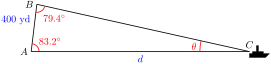
Solution.
First note that \(\triangle ABC\) is not a right triangle, so we cannot use the trig ratios directly to find the sides of this triangle.
The unknown distance \(d\) is the side opposite \(\angle B = 79.4\degree\text{.}\) In order to use the Law of Sines, we must know another angle and the side opposite that angle. We do: we know that side \(c = 400\text{,}\) and we can compute the angle at the ship, \(\angle C\text{.}\)
\begin{equation*}
\angle C = 180\degree - (79.4\degree + 83.2\degree) = 17.4\degree
\end{equation*}
Now we apply the Law of Sines, using angles \(B\) and \(C\text{.}\)
\begin{align*}
\dfrac{b}{\sin (B)} \amp = \dfrac{c}{\sin (C)} \amp\amp \blert{\text{Substitute the given values.}}\\
\dfrac{d}{\sin (79.4\degree)} \amp = \dfrac{400}{\sin (17.4\degree)} \amp\amp \blert{\text{Evaluate sines.}}\\
\dfrac{d}{0.9829} \amp = \dfrac{400}{0.2990} \amp\amp \blert{\text{Multiply both sides by 0.9829.}}\\
d \amp = 1315
\end{align*}
The ship is about 1315 yards from the observer at \(A\text{.}\)
Checkpoint 3.23.
Delbert and Francine are 40 feet apart on one side of a river. They make angle measurements to a pine tree on the opposite shore as shown at right. What is the distance from Francine to the pine tree?
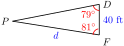
Subsection Solving Triangles with the Law of Sines
In order to apply the Law of Sines to find a side, we must know one angle of the triangle and its opposite side (either \(a\) and \(A\text{,}\) or \(b\) and \(B\text{,}\) or \(c\) and \(C\)), and one other angle. Then we can find the side opposite that angle.
Example 3.24.
In the triangle shown at right,
\begin{equation*}
A = 37\degree, B = 54\degree,~ \text{and}~ a= 11
\end{equation*}
Find \(b\text{.}\)
Solve the triangle.
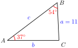
Solution.
-
We use the Law of Sines with \(a\) and angle \(A\) to find \(b\text{.}\)
\begin{align*}
\dfrac{a}{\sin (A)} \amp = \dfrac{b}{\sin (B)} \amp\amp \blert{\text{Substitute the given values.}}\\
\dfrac{11}{\sin (37\degree)} \amp = \dfrac{b}{\sin (54\degree)} \amp\amp \blert{\text{Multiply both sides by} \sin (54\degree).}\\
\dfrac{11}{\sin (37\degree)} \cdot \sin (54\degree) \amp = b
\end{align*}
Evaluating this expression with a calculator, we find that \(b \approx 14.79\text{.}\)
The angle \(C = 180\degree-(37\degree + 54\degree)=89\degree\text{.}\) Now we use the Law of Sines to find side \(c\text{.}\) Note that it is safer to use the given side, \(a\text{,}\) rather than the value we calculated for \(b\text{.}\)
\begin{align*}
\dfrac{a}{\sin (A)} \amp = \dfrac{c}{\sin (C)} \amp\amp \blert{\text{Substitute the known values.}}\\
\dfrac{11}{\sin (37\degree)} \amp = \dfrac{c}{\sin (89\degree)} \amp\amp \blert{\text{Multiply both sides by} \sin (89\degree).}\\
\dfrac{11}{\sin (37\degree)} \cdot \sin (89\degree)\amp = c
\end{align*}
so \(c \approx 18.28.\)
Checkpoint 3.25.
In the triangle at right,
\begin{equation*}
A = 65\degree, C = 42\degree, ~\text{and}~ c = 16
\end{equation*}
Solve the triangle.
(Hint: Which side will you find first?)
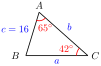
Answer.
\(B = 73\degree\text{,}\) \(~b = 22.87\text{,}\) \(~a = 21.67\)
Subsection Finding an Angle
We can also use the Law of Sines to find an unknown angle of a triangle. We must know two sides of the triangle and the angle opposite one of them.
Example 3.26.
In the triangle shown at right,
\begin{equation*}
B = 55\degree, a = 5,~ \text{and}~ b = 11
\end{equation*}
Solve the triangle.
Solution.
We must find the three remaining parts of the triangle, \(A, C\text{,}\) and \(c\text{.}\) First, we use the Law of Sines to find \(\sin (A)\text{.}\)
\begin{align*}
\dfrac{\sin (A)}{a} \amp = \dfrac{\sin (B)}{b} \amp\amp \blert{\text{Substitute the known values.}}\\
\dfrac{\sin (A)}{5} \amp = \dfrac{\sin (55\degree)}{11} \amp\amp \blert{\text{Multiply both sides by 5.}}\\
\sin (A) \amp = 5 \cdot \dfrac{\sin (55\degree)}{11} \approx 0.3723
\end{align*}
So \(A = \sin^{-1}(0.3723) \approx 21.9\degree\text{.}\) Now we know two angles, and we can find angle \(C\text{.}\)
\begin{align*}
C \amp = 180\degree - (B + A)\\
\amp = 180\degree - 55\degree - 21.9\degree = 103.1\degree
\end{align*}
Finally, we use the Law of Sines to find side \(c\text{.}\)
\begin{align*}
\dfrac{c}{\sin (C)} \amp = \dfrac{b}{\sin (B)} \amp\amp \blert{\text{Substitute the known values.}}\\
\dfrac{c}{\sin (103.1\degree)} \amp = \dfrac{11}{\sin (55\degree)} \amp\amp
\begin{array}{l}
\blert{\text{Multiply both sides by }}\\
\blert{\sin (103.1\degree).}
\end{array}\\
c \amp = \dfrac{11}{\sin (55\degree)} \cdot \sin (103.1\degree)
\end{align*}
Evaluating this expression with a calculator gives \(c \approx 13.1.\)
Checkpoint 3.27.
Sketch a triangle with \(C = 93\degree, a = 7\text{,}\) and \(c = 11\text{.}\)
Use the Law of Sines to find another angle of the triangle.
Solve the triangle, and label your sketch with the results.
Answer.
\(\displaystyle A = 39.5\degree\)
\(\displaystyle b = 8.13,~B = 47.5\degree\)
Example 3.30.
Find two triangles in which \(B = 14.4\degree, a = 8\text{,}\) and \(b = 3\text{,}\) and sketch both triangles.
Solution.
Using the Law of Sines, we have
\begin{align*}
\dfrac{\sin (A)}{a} \amp = \dfrac{\sin (B)}{b} \amp\amp \blert{\text{Substitute the known values.}}\\
\dfrac{\sin (A)}{8} \amp = \dfrac{\sin (14.4\degree)}{3} \amp\amp \blert{\text{Multiply both sides by 8.}}\\
\sin (A) \amp = 8 \cdot \dfrac{\sin (14.4\degree)}{3} \approx 0.6632
\end{align*}
There are two angles with sine \(0.6632\text{:}\)
the acute angle \(A = \sin^{-1}(0.6632) = 41.5\degree,\)
or its supplement, \(A^{\prime} = 180\degree - 41.5\degree = 138.5\degree\text{.}\)
Each of these angles produces a different solution triangle, because the angle \(C\) and side \(c\) will be different also.
In the first case, angle \(C = 180\degree - (14.4\degree + 138.5\degree) = 27.1\degree\text{,}\) and we have the triangle shown in figure (a).
In the second case, \(C = 180\degree - (14.4\degree + 41.5\degree) = 124.1\degree\text{,}\) which gives us the triangle shown in figure (b).
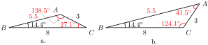
Checkpoint 3.31.
Suppose that \(C = 29.7\degree, b = 8\text{,}\) and \(c = 5\text{.}\)
Find two possible values for angle \(B\text{.}\)
Solve the triangle for both values of \(B\text{,}\) and sketch both solutions.
Answer.
\(B = 52.4\degree\) or \(B = 127.6\degree\)
-
\(A = 97.9\degree,~a = 10\)
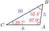
or \(A = 22.7\degree,~a = 3.9\)
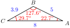
Subsection Applications
In the next example, we use two triangles to solve the problem.
Example 3.32.
Richard wants to measure the height of a castle controlled by hostile forces. When he is as close as he can get to the castle, the angle of elevation to the top of the wall is \(18.5\degree\text{.}\) He then retreats 20 yards and measures the angle of elevation again; this time it is \(15.9\degree\text{.}\) How tall is the castle?
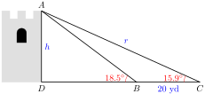
Solution.
Notice that \(h\) is one side of the right triangle \(ADC\text{.}\) If we can find its hypotenuse, labeled \(r\) in the figure, we can use the sine ratio to find \(h\text{.}\) To find \(r\text{,}\) we consider a second triangle, \(ABC\text{,}\) as shown below.
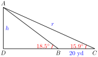
In this triangle, we know side \(BC = 20\) and would like to find side \(AC = r\text{.}\) We can use the Law of Sines to find \(r\text{,}\) but first we must calculate the other angles of the triangle.
Now, the angle opposite \(r, ~\angle ABC\text{,}\) is the complement of \(18.5\degree\text{,}\) so
\begin{equation*}
\angle ABC = 180\degree - 18.5\degree = 161.5\degree
\end{equation*}
The angle opposite the 20-yard side, \(\angle BAC\text{,}\) is
\begin{equation*}
\angle BAC = 180\degree - (161.5\degree + 15.9\degree) = 2.6\degree
\end{equation*}
Now we can apply the Law of Sines to find \(r\text{.}\) We have
\begin{align*}
\dfrac{r}{\sin (161.5\degree)} \amp = \dfrac{20}{\sin (2.6\degree)} \amp\amp \blert{\text{Solve for }r.}\\
r \amp = \sin (161.5\degree) \cdot \dfrac{20}{\sin 2.6\degree}\\
\amp \approx 139.9
\end{align*}
So \(r\) is about 139.9 yards. Finally, using the right triangle \(ADC\) and the definition of sine, we can write
\begin{align*}
\dfrac{h}{r} \amp = \sin (15.9)\degree \amp\amp \blert{\text{Solve for }h.}\\
h \amp = r \cdot \sin (15.9)\degree \approx 38.33
\end{align*}
The castle is about 38.33 yards tall.
Checkpoint 3.33.
Solve the problem in the previous example again, but instead of finding \(r\text{,}\) find the length \(AB\text{,}\) and then use \(\triangle ABD\) to find \(h\text{.}\)
Answer.
\(AB = 120.79\text{,}\) the castle is about 38.33 yards tall.
Subsection Measuring Astronomical Distances
If you look at a nearby object and alternately close your left and right eyes, the object seems to jump in position. This apparent change occurs because your eyes are viewing the object from two different positions spaced several centimeters apart. If the object at point \(O\) is straight ahead of one eye, it appears to be at some angle \(p\) away from the line of sight of the other eye. The angle \(p\) is called the parallax of the object.
Use the figure below to see that \(p\) is also the angle between the directions to your two eyes when viewed from point \(O\text{.}\) (What fact from geometry justifies this statement?)
Astronomers use parallax to determine the distance from earth to stars and other celestial objects. Two observers on Earth at a known distance apart both measure the direction to the star. The difference in angle between those two directions is the parallax.
Example 3.34.
Astronomers 1000 kilometers apart observe an asteroid with a parallax of \(0.001\degree\text{.}\) How far is the asteroid from Earth?
Solution.
We let \(x\) represent the distance to the asteroid. The asteroid and the two observers make an isosceles triangle with base 1000 km and equal sides of length \(x\text{,}\) as shown below.
The base angles of the triangle are both \(\dfrac{180\degree - 0.001\degree}{2} = 89.999\degree\text{.}\) By the Law of Sines,
\begin{align*}
\dfrac{x}{\sin (89.999\degree)} \amp = \dfrac{1000}{\sin (0.001\degree)} \amp\amp \blert{\text{Solve for }x.}\\
x \amp = \sin (89.999\degree) \cdot \dfrac{1000}{\sin (0.001\degree)}\\
x \amp \approx 57,000,000
\end{align*}
The asteroid is about 57 million kilometers from Earth (roughly one third of the distance to the Sun).
Checkpoint 3.35.
Two observers 800 kilometers apart observe an object with a parallax of \(0.0005\degree\text{.}\) How far is the object from Earth?
Subsection Small Angles: Minutes and Seconds
To obtain the most accurate parallax measurements, the distance between the two observers should be as large as possible. But even measured from opposite sides of Earth’s orbit, stars outside the solar system have parallaxes much smaller than \(0.0001\degree\text{.}\)
In order to handle such small angles, we divide degrees into smaller units called minutes and seconds. One minute is \(\dfrac{1}{60}\) of a degree, and 1 second is \(\dfrac{1}{60}\) of a minute, or \(\dfrac{1}{3600}\) of a degree. We use the following notation for minutes and seconds.
Fractions of a Degree.
When describing large distances, astronomers sometimes use the distance from Earth to the Sun, about 93 million miles, as the unit of measurement. This distance is called 1 Astronomical Unit, or 1 AU. For example, an object that is three times as far away as the Sun would be at a distance of 3 AU.
Example 3.36.
The star Wolf 359 has a parallax of \(0.85^{\prime \prime}\) when observed from opposites sides of Earth’s orbit. How far away is the star?
Solution.
In the figure below, the star Wolf 359 is located at point \(O\text{.}\) Our Sun is located at point \(C\text{,}\) halfway between the two observation points at \(A\) and \(B\text{.}\) Thus, the distance between the observation points is twice the distance from the Earth to the Sun, or 2 AU.
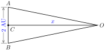
The altitude from \(O\) to side \(\overline{AB}\) forms a right triangle \(ACO\) and bisects the angle at \(O\text{.}\) Thus
\begin{equation*}
\angle AOC = \dfrac{1}{2}(0.85^{\prime \prime}) = 0.425^{\prime \prime}
\end{equation*}
We use the definition of tangent to find
\begin{align*}
\tan 0.425^{\prime \prime} \amp = \dfrac{\text{opposite}}{\text{adjacent}}\\
\tan (0.425\degree / 3600) \amp = \dfrac{1}{x} \amp\amp \blert{\text{Solve for }x.}\\
x \amp = \dfrac{1}{\tan (0.425\degree / 3600)} \approx 485,000
\end{align*}
The star is approximately \(485,000\) AU from Earth, or nearly half a million times the distance from Earth to the Sun.
Checkpoint 3.37.
Two observers are 1 AU (astronomical unit) apart. They find that the parallax to a distant star is \(1^{\prime \prime}\text{.}\) What is the distance to the star, in astronomical units?
(This distance is called a parsec. In other words, a parsec is the distance at which the parallax from observations 1 AU apart is \(1^{\prime \prime}\text{.}\) In this Exercise, you are calculating the number of astronomical units in 1 parsec.)
Answer.
1 parsec \(\approx 206,265\) AU
Review the following skills you will need for this section.
Algebra Refresher 3.3.
Convert to a decimal fraction.
5 inches \(=\) foot
10 ounces \(=\) pound
24 minutes \(=\) hour
35 seconds \(=\) minute
16 minutes \(=\) degree
\(4^{\prime} =\) \(\degree\)
\(2^{\prime \prime} =\) \(\degree\)
\(1^{\prime} ~5^{\prime \prime}=\) \(\degree\)
\(\underline{\qquad\qquad\qquad\qquad}\)
Algebra Refresher Answers
\(\displaystyle 0.41\overline{6}\)
\(\displaystyle 0.625\)
\(\displaystyle 0.4\)
\(\displaystyle 0.58\overline{3}\)
\(\displaystyle 0.2\overline{6}\)
\(\displaystyle 0.0\overline{6}\)
\(\displaystyle 0.000\overline{5}\)
\(\displaystyle 0.0180\overline{5}\)
Subsection Section 3.2 Summary
Subsubsection Concepts
Law of Sines.
If the angles of a triangle are \(A, B\text{,}\) and \(C\text{,}\) and the opposite sides are respectively \(a, b,\) and \(c\text{,}\) then
\begin{equation*}
\dfrac {\sin (A)}{a} = \dfrac {\sin (B)}{b} = \dfrac {\sin (C)}{c}
\end{equation*}
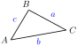
or equivalently,
\begin{equation*}
\dfrac {a}{\sin (A)} = \dfrac {b}{\sin (B)} = \dfrac {c}{\sin (C)}
\end{equation*}
We can use the Law of Sines to find an unknown side in an oblique triangle. We must know the angle opposite the unknown side, and another side-angle pair.
We can also use the Law of Sines to find an unknown angle of a triangle. We must know two sides of the triangle and the angle opposite one of them.
Remember that there are two angles with a given sine. When using the Law of Sines, we must check whether both angles result in possible triangles.
We use minutes and seconds to measure very small angles.
Fractions of a Degree.
Subsubsection Study Questions
Can we use the Law of Sines to solve a right triangle?
Explain why we cannot use the Law of Sines to solve the triangle with \(a = 8,~b = c\) and \(C = 35\degree\text{.}\)
Francine says "I’m thinking of an angle whose sine is \(0.3420\) (rounded to four decimal places)." Delbert says "The angle must be \(20\degree\) (rounded to the nearest degree)." Is he correct? Why or why not?
Sketch two possible triangles with \(A=25\degree, ~b = 18\text{,}\) and \(a = 10\text{.}\)
Try to sketch a triangle with \(A=65\degree, ~b = 18\text{,}\) and \(a = 10\text{.}\) What went wrong?
Subsubsection Skills
Use the Law of Sines to find a side #1-6
Use the Law of Sines to find an angle #7-12
Use the Law of Sines to solve an oblique triangle #13-18
Solve problems using the Law of Sines #19-28
Compute distances using parallax #29-32
Solve problems involving the ambiguous case #33-46
Exercises Homework 3.2
Exercise Group.
For Problems 1–6, use the Law of Sines to find the indicated side. Round to two decimal places.
1.
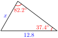
2.
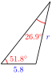
3.
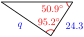
4.
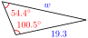
5.
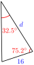
6.
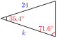
Exercise Group.
For Problems 7–12, use the Law of Sines to find the indicated angle. Round to two decimal places.
7.
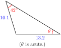
8.
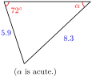
9.
10.
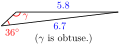
11.
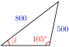
12.
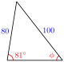
Exercise Group.
For Problems 13–18, sketch the triangle and solve. Round answers to two decimal places.
13.
\(b = 7,~ A = 23\degree,~ B = 42\degree\)
14.
\(c = 34,~ A = 53\degree,~ C = 26\degree\)
15.
\(a = 1.8,~ c = 2.1,~ C = 44\degree\)
16.
\(b = 8.5,~ c = 6.8,~ B = 23\degree\)
17.
\(c = 75,~ A = 35\degree,~ B = 46\degree\)
18.
\(a = 94,~ B = 29\degree,~ C = 84\degree\)
Exercise Group.
For Problems 19–26,
Sketch and label a triangle to illustrate the problem.
Solve the problem.
19.
Maryam wants to know the height of a cliff on the other side of a ravine. The angle of elevation from her edge of the ravine to the cliff top is \(84.6\degree\text{.}\) When she moves 30 feet back from the ravine, the angle of elevation is \(82.5\degree\text{.}\) How tall is the cliff?
20.
Amir wants to know the height of a tree in the median strip of a highway. The angle of elevation from the highway shoulder to the treetop is \(43.5\degree\text{.}\) When he moves 10 feet farther away from the tree, the angle of elevation is \(37.2\degree\text{.}\) How tall is the tree?
21.
Delbert and Francine are 10 kilometers apart, both observing a satellite that passes directly over their heads. At a moment when the satellite is between them, Francine measures its angle of elevation as \(84.6\degree\text{,}\) and Delbert measures an angle of \(87\degree\text{.}\) How far is the satellite from Delbert?
22.
Megan rows her kayak due east. When she began, she spotted a lighthouse 2000 meters in the distance at an angle of \(14\degree\) south of east. After traveling for of an hour, the lighthouse was at an angle of \(83\degree\) south of east. How far did Megan travel, and what was her average speed?
23.
Chad is hiking along a straight path but needs to detour around a large pond. He turns \(23\degree\) from his path until clear of the pond, then walks back to his original path, intercepting it at an angle of \(29\degree\) and at a distance of 2 miles from where he had left the path. How far did Chad walk in each of the two segments of his detour, and how much farther did his detour require compared with a straight line through the pond?
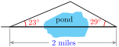
24.
Bob is flying to Monterey but must change course to avoid a storm. He flies \(19\degree\) off from his original direction until he clears the storm, then turns again to return back to his original flight path, intercepting it at an angle of \(54.9\degree\) and at a distance of 50 miles from where he had left it. How much farther did his detour require compared with his original course?
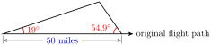
25.
Geologists find an outcropping from an underground rock formation that normally indicates the presence of oil. The outcropping is on a hillside, and the formation itself dips another \(17\degree\) from the surface. If an oil well is placed 1000 meters downhill from the outcropping, how far will the well have to drill before it reaches the formation?
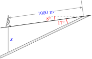
26.
A proposed ski lift will rise from point near the base of the slope with an angle of \(27\degree\text{.}\) At a distance of 400 meters further from the slope, the angle of elevation to the top of the ski lift is \(19\degree\text{.}\) How long is the ski lift?
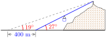
27.
Thelma wants to measure the height of a hill. She first plants a 50 foot tall antenna at the hill’s peak. Then she descends the hill and finds a point where she can see the top and the bottom of the antenna. The angle of elevation to the bottom of the antenna is \(23\degree\text{,}\) and the angle of elevation to the top of the antenna is \(24\degree\text{.}\)
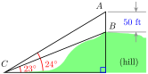
Find \(\angle ACB\text{.}\)
Find\(\angle CAB\text{,}\) at the top of the antenna.
How long is \(BC\text{,}\) the distance from the bottom of the antenna to \(C\text{?}\)
How tall is the hill?
28.
A billboard of California’s gubernatorial candidate Angelyne is located on the roof of a building. At a distance of 180 feet from the building, the angles of elevation to the bottom and top of the billboard are respectively \(39.8\degree\) and \(47.3\degree\text{.}\) How tall is the billboard?
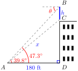
Exercise Group.
For Problems 29–32, compute the following distances in Astronomical Units. Then convert to kilometers, using the fact that 1 AU \(\approx 1.5 \times 10^{8}\) km.
29.
When observed from opposite sides of Earth’s orbit, the star Alpha Centauri has a parallax of \(0.76^{\prime \prime}\text{.}\) How far from the Sun is Alpha Centauri?
30.
How far from the Sun is Barnard’s star, which has a parallax of \(1.1^{\prime \prime}\) when observed at opposite ends of Earth’s orbit?
31.
How far from the Sun is Tau Ceti, which has a parallax of \(0.55^{\prime \prime}\) when observed from opposite ends of Earth’s orbit?
32.
How far from the Sun is Sirius, which has a parallax of \(0.75^{\prime \prime}\) when observed from opposite ends of Earth’s orbit?
Exercise Group.
Problems 33–38 consider the ambiguous case of the Law of Sines, when two sides and an angle opposite one of them are known.
33.
In the right triangle \(ABC\) shown, \(\angle A = 30\degree,~\angle C = 90\degree\text{,}\) and \(c = 3\) inches.
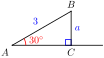
Use the definition of \(\sin (A)\) to solve for \(a\) (the length of side \(\overline{BC}\)).
Can you draw a triangle \(ABC\) with \(A = 30\degree\) and \(c = 3\) if \(a \lt \dfrac{3}{2}\text{?}\) Why or why not?
How many triangles are possible if \(\dfrac{3}{2} \lt a \lt 3\text{?}\)
How many triangles are possible if \(a \gt 3\text{?}\)
34.
In this problem we show that there are two different triangles \(ABC\) with \(A = 30\degree,~ a = 2\) and \(c = 3\text{.}\)
Use a protractor to draw an angle \(A = 30\degree\text{.}\) Mark point \(B\) on one side of the angle so that \(\overline{AB}\) is 3 inches long.
Locate two distinct points on the other side of the angle that are each 2 inches from point \(B\text{.}\) These points are both possible locations for point \(C\text{.}\)
Use the Law of Sines to find two distinct possible measures for \(\angle C\text{.}\)
35.
In \(\triangle ABC, \angle A = 30\degree\) and \(c = 12\text{.}\) How many triangles are possible for each of the following lengths for side \(a\text{?}\) Sketch the solutions in each case.
\(\displaystyle a = 6\)
\(\displaystyle a = 4\)
\(\displaystyle a = 9\)
\(\displaystyle a = 15\)
36.
Consider the triangle \(ABC\) shown below.
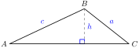
Express the length of the altitude in terms of \(\angle A\) and \(c\text{.}\)
Now suppose we keep \(\angle A\) and side \(c\) fixed, but allow \(a\) to vary in length. What is the smallest value \(a\) can have and still be long enough to make a triangle?
What are the largest and smallest values that \(a\) can have in order to produce two distinct triangles \(ABC\) (without changing \(\angle A\) and side \(c\))?
37.
For the triangle in Problem 36, suppose \(A = 40\degree\) and \(c = 8\text{.}\)
Sketch and solve the triangle if \(a = 12\text{.}\)
Sketch and solve the triangle if \(a = 6\text{.}\)
Sketch and solve the triangle if \(a = 4\text{.}\)
For what value of \(a\) is \(c\) the hypotenuse of a right triangle?
38.
For the figure in Problem 36, suppose \(A = 70\degree\) and \(c = 20\text{.}\)
For what value of \(a\) is the triangle a right triangle?
For what values of \(a\) are there two solutions for the triangle?
For what values of \(a\) is there one obtuse solution for the triangle?
For what value of \(a\) is there no solution?
Exercise Group.
For Problems 39–42, find the remaining angles of the triangle. Round answers to two decimal places. (These problems involve the ambiguous case.)
39.
\(a = 66,~ c = 43,~ C = 25\degree\)
40.
\(b = 10,~ c = 14,~ B = 20\degree\)
41.
\(b = 100,~ c = 80,~ B = 49\degree\)
42.
\(b = 4.7,~ c = 6.3,~ C = 54\degree\)
43.
Delbert and Francine are 1000 yards apart. The angle Delbert sees between Francine and a certain tree is \(38\degree\text{.}\) If the tree is 800 yards from Francine, how far is it from Delbert? (There are two possible answers.)
44.
From the lookout point on Fabrick Rock, Ann can see not only see the famous "Crooked Spire" in Chesterfield, which is 8 miles away, but also the red phone box in the village of Alton. Chesterfield and Alton are 7 miles apart. Fabrick Rock has a plaque that shows directions to famous sites, and from the plaque Ann determines that the angle between the lines to the spire and the phone box measures \(19\degree\text{.}\) How far is Fabrick Rock from the phone box? (There are two possible answers.)
45.
Sketch a triangle with \(A = 25\degree,~ B = 35\degree\text{,}\) and \(b = 16\text{.}\)
Use the Law of Sines to find \(a\text{.}\)
Use the Law of Sines to find \(c\text{.}\)
Find \(c\) without using the Law of Sines. (Hint: Sketch the altitude, \(h\text{,}\) from \(C\) to make two right triangles. Find \(h\text{,}\) then use \(h\) to find \(c\text{.}\))
46.
Sketch a triangle with \(A = 75\degree,~ a = 15\text{,}\) and \(b = 6\text{.}\)
Use the Law of Sines to find \(c\text{.}\)
Find \(c\) without using the Law of Sines.
Exercise Group.
Problems 47–48 prove the Law of Sines using the formula for the area of a triangle. (See Section 3.1 for the appropriate formula.)
47.
Sketch a triangle with angles \(A, ~B\) and \(C\) and opposite sides of lengths respectively \(a,~ b\) and \(c\text{.}\)
Write the area of the triangle in terms of \(a,~b\text{,}\) and angle \(C\text{.}\)
Write the area of the triangle in terms of \(a,~c\text{,}\) and angle \(B\text{.}\)
Write the area of the triangle in terms of \(b,~c\text{,}\) and angle \(A\text{.}\)
48.
Equate the three different expressions from Problem 47 for the area of the triangle. Multiply through by \(\dfrac{2}{abc}\) and simplify to deduce the Law of Sines.
49.
Here is a method for solving certain oblique triangles by dividing them into two right triangles. In the triangle shown, we know two angles, \(A\) and \(B\text{,}\) and the side opposite one of them, say \(a\text{.}\) We would like to find side \(b\text{.}\)
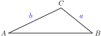
Draw the altitude \(h\) from angle \(C\text{.}\)
Write an expression for \(b\) in terms of \(h\) and angle \(A\text{.}\)
Write an expression for \(h\) in terms of angle \(B\text{.}\)
Substitute your expression for \(h\) into your expression for \(b\text{.}\)
-
Which of the following is equivalent to the formula you wrote in part (d)?
\(\displaystyle a \sin (A) = b \sin (B)\)
\(\displaystyle \dfrac{a}{\sin (A)} = \dfrac{b}{\sin (B)}\)
\(\displaystyle \dfrac{a}{\sin (B)} = \dfrac{b}{\sin (A)}\)